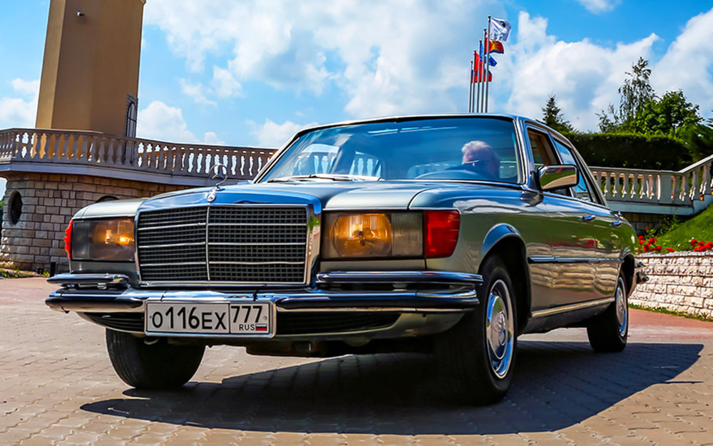

Машина Высоцкого, Карпова и
Брежнева: первый в истории S-класс
В семидесятых даже в небогатом оснащении Mercedes- Benz W116 стоил как три хэтчбека
Volkswagen Golf или четыре Лады‑1500S (в «девичестве»
— ВАЗ‑2103).
 27888
27888